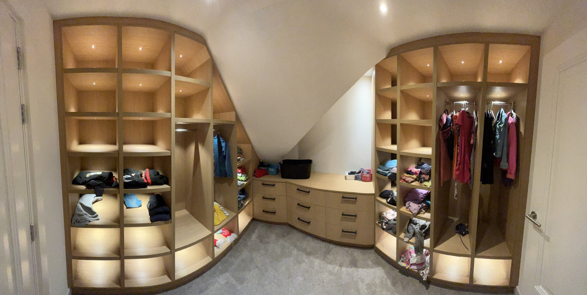
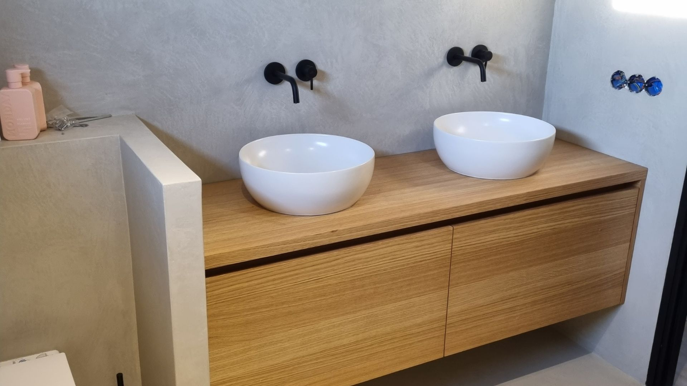

01 / Specialiteit
Keukens
Prachtige keukens op maat die perfect passen bij jouw levensstijl en esthetiek, van strak modern tot warm en karaktervol.

Ervaar de verfijning van op maat gemaakte interieuroplossingen met Jelle Vogels, waar vakmanschap en precisie samenkomen. Als een ambachtsman met een uitzonderlijk oog voor detail, ben ik gespecialiseerd in het omzetten van uw unieke visie in elegante, praktische meubelstukken. Of u nu een individuele klant bent met gedurfde ideeën of een bedrijf met een specifiek project, mijn doel is om uitzonderlijke service te leveren.
Samen bespreken we de mogelijkheden en maken we keuzes in hout, kleur, materiaal en uitstraling — van kookeiland tot buitenkeuken.
Ontdek de kunst van superieur interieurdesign bij Jelle Vogels Interieurbouw, waar uw droomontwerp werkelijkheid wordt.
Ik ben Jelle, gepassioneerd vakman in het creëren van stijlvolle, op maat gemaakte meubelstukken die zowel esthetisch als functioneel zijn. Mijn expertise strekt zich uit van individuele woonconcepten tot unieke bedrijfsprojecten. Uw visie is mijn missie.
Heeft u een innovatief idee dat tot leven gebracht moet worden? Of ligt er al een ruwe schets klaar, misschien getekend op een diner servet? Wat uw inspiratie ook is, ik sta klaar om deze samen met u te verfijnen en te realiseren.
Laat ons de perfecte balans van schoonheid en functionaliteit in uw ruimte brengen. Neem contact op om de eerste stap te zetten naar een op maat gemaakt meesterwerk.


Jelle Vogels Interieurbouw maakt jouw unieke droomkast-meubel of keuken. Ik neem de tijd en kom met een uniek ontwerp. Samen bespreken we de mogelijkheden en maken we keuzes in hout, kleur, materiaal en uitstraling. Hieronder vind je een kleine greep uit de gerealiseerde projecten.
Prachtige keukens op maat die perfect passen bij jouw levensstijl en esthetiek, van strak modern tot warm en karaktervol.

Elegante boekenkasten, inloopkasten onder schuine wanden, bijkeukens en slimme opbergoplossingen op de millimeter.

Stijlvolle wastafelkasten en maatwerk badkamermeubilair die naadloos integreren in jouw interieur.

Zwevende tv-meubels, verlichte wandkasten, thuiswerkplekken en massief eiken buitenmeubels voor de kamado.
Bezoek onze werkplaats aan de Kempkensweg 9 in Erp (alleen op afspraak) om materialen, stalen en 3D-ontwerpen samen te bekijken.